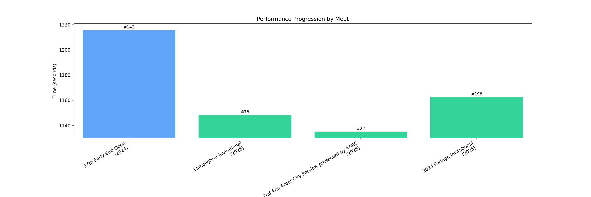

Athlete Information
Marcus Chen

Ann Arbor Skyline
Current Grade: 10
Link to athlete.net accountSeason Record (SR): 18:55.2
Personal Record (PR): 18:55.2
Ann Arbor Skyline
Current Grade: 10
Link to athlete.net accountSeason Record (SR): 18:55.2
Personal Record (PR): 18:55.2
| Race Name | Date | Location | Distance | Time | Place | Grade | Results |
|---|---|---|---|---|---|---|---|
| Lamplighter Invitational | Aug 15 2025 | N/A | 5K | 19:08.4 | 78 | 10 | View Results |
| 2nd Ann Arbor City Preview presented by AARC | Aug 27 2025 | N/A | 5K | 18:55.2 | 22 | 10 | View Results |
| 2024 Portage Invitational | Oct 5 2025 | N/A | 5K | 19:22.7 | 198 | 10 | View Results |
| 37th Early Bird Open (HS Open 5K) | Aug 29 2024 | N/A | 5K | 20:15.8 | 142 | 9 | View Results |
This graph visualizes the athlete's race times across meets, color-coded by grade.
